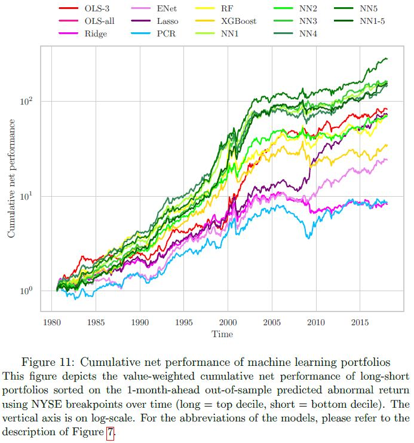
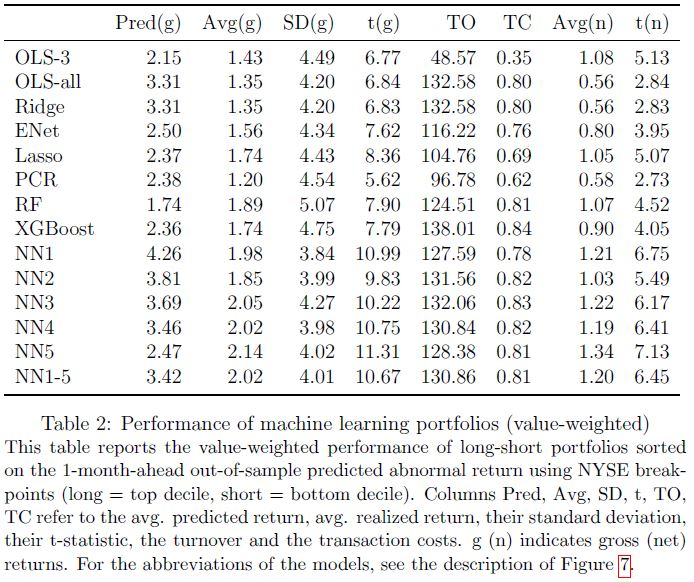
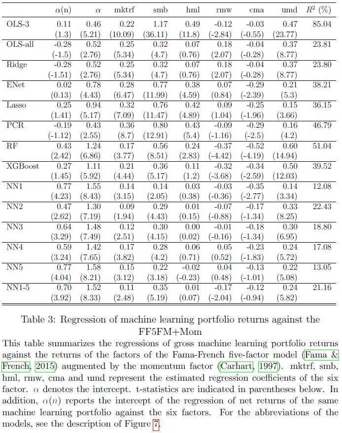

Machine Learning for Managing Stock Portfolios
Before Diving In
Those interested in the technical details may scroll down to the bottom (section Appendix), where the pdf-file of my master’s thesis is displayed. Unlike the other posts, in the remainder of this post, I will not go into the technical details or show any code. I will rather give an high-level overview of what I did as part of my master’s thesis.
Introduction
In their seminal paper, Gu, Kelly, and Xiu (2020) describe how supervised machine learning models can be utilized to manage stock portfolios. They report that empirically these so-called machine learning portfolios deliver substantial risk-adjusted outperformance. However, their analyses only consider gross returns, i.e., before transaction costs. This is a problem insofar as these machine learning portfolios very frequently buy stocks and sell them shortly afterwards (or the other way around). Each of these stock-level transactions leads to costs which reduce the net returns of the portfolio. It is therefore a fair question what the net return of these machine learning portfolios is.
In trying to answer this question, I encountered two major challenges. First, Gu, Kelly, and Xiu (2020) do not provide any code for the construction of the machine learning portfolios. Hence, I had to replicate their approach from scratch in Python based on the descriptions in their paper. Second, in order to calculate the net returns I need at every point in time the stock-level transaction costs for all stocks considered (or at least an estimate of them). My supervisor pointed out to me that such a data set had recently been made publicly available by Chen and Zimmermann (2021), which I then used for my analyses.
In the following, I will first briefly say something about the data set I used. Then, I will give a high-level description of how I constructed the machine learning portfolios. Subsequently, I will present my results on their after-transaction-cost performance.
Data
The data, upon which my analyses were based, covered monthly information on approx. 8,000 major US exchanged-listed stocks between 1970 and 2017. For every stock, I have for each month a set of 202 stock specific characteristics, its gross return as well as its transaction/trading cost (i.e. half the spread).
Approach
The foundation upon which machine learning portfolios are based is a prediction model. The prediction model takes the characteristics of each stock in month \(t\) as input and outputs for each stock a prediction of the gross return realized in month \(t+1\). The prediction model is gradually updated overtime using an expanding window approach.
I trained and tuned a broad variety of prediction models. These include several baseline unpenalized and penalized linear models, tree based models such as random forests and gradient boosted trees, and multiple deep learning models. Note that each prediction model is the foundation for a different machine learning portfolio.
Given a prediction model, at the end of month \(t\), the machine learning portfolio is constructed as follows: The prediction model is used to predict the gross return of each stock in month \(t+1\). Next, all stocks are sorted according to their predicted gross return for month \(t+1\). Subsequently, the portfolio is formed by going long in the top 10% and going short the bottom 10% of stocks sorted by predicted return. The remaining 80% of the stocks are kept neutral (zero position).
Over time, the predicted returns for a given stock tend to fluctuate a lot. Hence, a stock that ranks in the top 10% by predicted return in one month seldom remains there in the subsequent month (same holds for bottom 10%). As a consequence, at the end of each month many transactions need to be executed in order to close existing long and short positions and open new ones. Each of these transactions causes costs which in turn shrink net returns. The data set by provided by Chen and Zimmermann (2021) containing monthly stock-level information on the transaction costs allows me to exactly compute those net returns of the machine learning portfolios I constructed.
Results
The tables and plots shown below are all taken from my master’s thesis (provided in the Appendix at the bottom of this page).
As mentioned above, each prediction model is the foundation for a different machine learning portfolio. The different machine learning portfolios are respectively based on: unpenalized linear models (\(OLS-3\), \(OLS-all\)), penalized linear models (\(Ridge\), \(LASSO\), \(E-Net\), i.e., elastic net), tree-based models (\(RF\), i.e. random forest, \(XGBoost\), i.e. boosted trees), and deep neural networks with 1 to 5 hidden layers (\(NN1\), \(NN2\), \(NN3\), \(NN4\), \(NN5\)) and an ensemble of them (\(NN\text{1-5}\)).

The above plot, depicts the cumulative out-of sample net performance of all the machine learning portfolios I constructed. The below table reports among others the average out-of sample monthly net returns (\(Avg(n)\) column) and the corresponding values of the t-statistic (\(t(n)\) column). Taken together, two insights can be drawn: Firstly, all considered machine learning portfolios earn statistically significant positive average monthly net returns. Secondly, the machine learning portfolios that are based on deep neural networks yield net returns that are substantially larger than those based on the other models.

However, it might by that all the considered machine learning portfolios earn rather high net returns just because they excessively take risks and are therefore rewarded with higher returns. Thus, I had a look at a risk adjusted measure of (out-) performance, namely the alpha against the Fama-French 5 Factor Model plus Momentum (FF5M+Mom). The below table reports among others for all machine learning portfolios the alphas after transaction costs (i.e. net alphas in \(\alpha(n)\) column) and the corresponding values of the t-statistic (in parentheses below). From this it can be seen that only the machine learning portfolios based on random forests and on deep neural networks yield statistically significant risk-adjusted outperformance (against the FF5M+Mom) after transaction costs.
